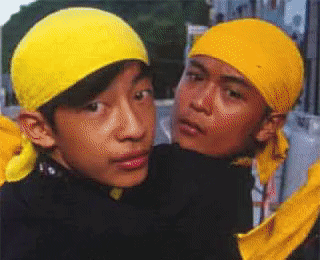
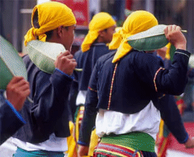
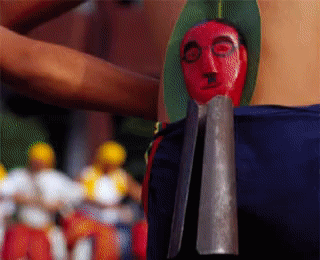
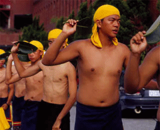

傳統的卑南族和阿美族一樣採行母系繼嗣制度，並行嚴密的年齡階級制度，不同年齡階層各有其名稱採行所謂的通名制。

吾人現今慣稱的「卑南族」，實際上原本自稱為「普努悠瑪樣」（Punuyumayan），下分兩個主要的系統：知本與南王系統。其中知本系統包括了七個社群：知本（TipuL）、建和（kasabakan）、利嘉（likabung）、泰安（tamaLakaw）、下賓朗（pinaski）、上賓朗（libeklibek）；而南王系統以南王部落（puyuma）為主。知本大族和南王社作戰失利，所以亦被改稱為
puyuma。清朝末年，南王社頭目比那賴（binaLay）獲清朝皇帝任命統治臺東縣被封為「卑南王」（取「比那」之諧音），故其族人被稱為「卑南族」而沿用至今。又因共有八社，日據時期被稱為「八社番」。現有人口約九千五百人。
知本與南王系統的差異主要在於起源傳說。根據南王系統的口述傳統，最早祖先乃乘著方舟自南方漂流至臺東，並在都蘭山（Tuwangalan，祖先的名字）登陸。後來才遷至都蘭山南方的大平原（現在的卑南遺址一帶）居住並耕種。知本大族的祖先則在臺東縣太麻里華源村（panapanayan）一處登陸。
卑南族人主要分佈在今日臺東縣卑南鄉與臺東市，由於與鄰近族群，包括南邊的東排灣群與魯凱族大南社、北面的阿美族與西部的布農族為鄰，其習俗與文化多有混雜色彩。例如，傳統的卑南族社會和阿美族一樣，採行母系繼嗣制度，並同以嚴密的年齡階級制度著稱，不同年齡階層各有其名稱，採行所謂的通名制。卑南族的男女皆有年齡階級組織，幼年期與老年期的男女使用相同的年齡階層名稱，但在少年與成年期，依性別而有專稱，各司其職。過去，一名卑南族的男性，到了
13、14
歲左右就要離家進入少年會所（takoban ）接受六年左右的教育訓練，到了適當的年禮即可參加晉升禮升級，其中最重要的兩個關卡就是進入青年期（「米加布坦」，mijaputan ）與成年期（「萬沙浪」，vangsalang ）的成年禮。青年期（約
18-20
歲）後的男子進入青年會所（parakwan ）接受更為嚴格的訓練，例如不能親近女性，並嚴禁抽菸、喝酒、唱歌，祭儀時別人唱跳舞時他們只能默默在一旁生火；不若族人們的盛裝，他們只能光著上身，腰間圍著簡樸的藍布，更沒有屬於他們的歌舞。只有通過成年禮晉升為「萬沙浪」後男子才能穿上美麗的服飾，開始與異性交往並有結婚的資格。
卑南族人的男性年齡階層組織在過去部落社會時期發揮了重要的功能，其男性訓練之嚴謹可比擬於希臘時期城邦的「斯巴達」教育，或許這也是卑南族在群強環伺的族群生態下得以立足於臺東平原的重要原因之一吧！現在雖然不同族群與部落之間已經不需要依賴戰爭來求取自我的生存權，然而卑南族社會的傳統價值仍然存留於其祭儀與相關文化中。
卑南族最重要的祭儀包括：

卑南族人一年之中最重要的祭儀有三項：三月份以婦女為主的除草完工慶祝（mugamu?t ）、七月份的收穫祭（muralijavan ）、以及以男性年齡階層為主於十二月舉行的猴祭（pasipas ）與大獵祭（mangayaw ）。其中除草完工祭、猴祭與大獵祭分別保存了女性與男性傳統歌樂與舞蹈。
婦女除草完工慶賀：
過去賓朗與利嘉兩社當女子年滿 13 或 14
歲後便加入女性組織的除草團（misaor ），當田中的小米在播種後雜草長得太快時，除草隊就會在年長女性的帶領下，依序由最年長者家中田地開始除草。除草工作告一段落後，村中男性會到山上採老藤（dake ）和編織花環（silahai ）的原料分給辛勞的婦女們；而婦女們則以歌聲結束慶賀除草完工。這項風俗後來隨賓朗社女子嫁至南王社而引進。現在，雖然種小米的人減少了，但是婦女除草完工祭仍然舉行，而日期則選在婦女節前後。其過程如下：
前日祭：
除草完工祭：
majaajam 。過去卑南族女性沒有其他屬於自己的歌，而 majaajam 則專屬於女性，唱完後再次歌舞，並以高舉最年長婦女的椅子和歡呼結束此儀式。
猴祭：
儀式舉行的時間從 12月下旬一直到1月3日。儀式過程如下：
整理會所與去除髒物儀式：
部落淨除儀式（smilap ）：
karuma '
an ）誦經祭拜，之後男女祭師輪流沿著部落外圍道路前往聚落的四個角落舉行淨除儀式，將代表死者的檳榔以芭蕉葉包好，重覆日前的儀式過程。回程時祭師須洗手並把代表自身的檳榔供奉於祖廟中。
搭建猴欄（karuwan na rangan ）：
少年祛邪儀式（halavakavakai ）：
halavakai
da! 」以祛除不淨之髒物。各家主人則會準備米糕（avai ）（現為糖果糕點取代）送給少年們。
猴祭：
malatawan ）帶著掛滿白紙條、上有刻畫的長竹子，到各家開門除喪（由喪家的後門入、前門出）。除喪後，所有少年級一起到猴欄所在刺猴（現在以假猴代替真猴），並吟唱古調（gumulao ）。少年們接著把猴子扛回會所，等待家中的女性親人帶來年糕、飲料。之後一起出會所，一面搖晃著猴子，一面吟唱
gumulao 。隨後少年們將猴子帶往丟棄之處，才返回會所進食。晚上，少年們在會所前廣場上升火起舞，同年少女亦著裝前來參與。
大獵祭：
緊接猴祭之後， majaputan
階級以上的男性才能參加，一早集合後向神明求告大獵祭開始，祈求賜下平安，出發前往獵場的途中，祭師在聚落邊界（lazekawwan ，門檻之意）擺放檳榔與料珠以避免將厄運帶到山中獵場。到了目的地，由祭師誦經祭告當地神祇，然後現地砍竹子紮營，家中有喪事者與其人要分營而睡。祭師再度祈求獵物豐收與祛除不潔。此後大獵祭的過程中，白天眾人要盡力捕獵，晚上則是大家討論分享的時間。在返回部落的前一天晚上，才得以解禁唱
bailaolao 的歌。
bailaolao 與 smibasob：
bailaolao 。其曲調不變但內容有四種：以蘆葦花開山禮動物增加提醒該是打獵的時機了；以鳥占判定吉凶以決定上山日期；描述在山上遭逢敵人並予以獵首；描述山上的生活，讚揚勇往直前不畏艱苦的英雄。
bailaolao ，由青年為首、成年與壯年在後一路跑回部落。婦女親人則早已準備食物、花環在凱旋門旁守候。凱旋門有大小之分，小門為喪家所用。當年長者在大凱旋門內唱
bailaolao ，青年們在外圍跑步不能停歇。此時由一年長喪偶者以竹杖將喪家婦女頭上的綠色花圈挑起，並埋入土中，以示除喪。眾人回到會所後，若有升級「萬沙浪」者，則由他的教父為他換上黑裙以示升級。開始跳舞，這時年長者唱傳統歌樂
dimiladizao ，其他人則跳舞，喪家也可加入，但只舞不歌。晚上則由年長的「萬沙浪」帶著剛晉級的學弟（從此時起可以穿戴綁腿與花環）前往各家拜碼頭。
青年除喪：
bailaolao 以安慰死者親屬，並鼓勵他們去除悲傷重拾歡樂。除喪後，輪到
mijaputan 的晉升禮，同樣地請他所敬佩的年長者為他換衣服並說鼓勵的話。此時儀式大約已到終點，最後的時間，族人們歡樂歌舞，結束年祭並迎接的一年開始。
卑南族的歌樂較為抒情古謠的唱腔高亢悠遠，由於注重團體生活，常有節奏性的歌樂，配合整齊劃一的工作與動作。

卑南族的歌樂較為抒情，也有一些流暢的歌曲，樂句較長。卑南族古謠的唱腔高亢悠遠，歌詞採用了頭韻、重疊句等手法。卑南族注重團體生活，因此常有節奏性的歌樂以配合整齊劃一的工作與動作，例如婦女除草團
mugamu?t
所唱的「工作歌」。卑南族由於狩獵時嚴禁女性參與，因此男子在舉行年祭時所唱之「猴祭」、「大獵祭」、「年祭」等祭歌是專屬男性的歌。相反的，婦女工作團的「工作歌」等，則是專屬於卑南族女性的歌。
卑南族與阿美族同屬一個音樂文化群，音樂反應出無半音五音音階。由於祭儀種類繁多，也因此造成祭祀團體及女巫在部落社會的重要角色。是女巫的歌很多的因素之一。女巫的歌在節奏方面比其他種族自由，拍子以四四拍為多，少有奇數拍。
卑南族專屬女性歌樂以「婦女節慶日」（mugamut）為著，是婦女在播種小米時節輪流到各家田間除草時，在休息時由年長婦女領唱的古週（Qemaiaqaiam），歌詞乃應時應景作即興創作。另外「歡慶歌舞」（malikasaw）是婦女在婚宴結束後，一起共舞祝賀的輕快歌曲。
「男子出草歸來之敘述歌」（revauvau）是一首幾乎已失傳的古謠，過去是年祭出草獵首歸來時唱的歌，勇士們到達村外，與迎接之部落人回集會所途中所唱的歌。
「年祭歡慶歌舞」（muarak）是年祭期間全村男女在集會所前歡樂地唱跳之歌舞，由一名年長者先唱，歌詞可因人、事、物作即興改變。
「年祭青年遊訪家戶」（puadangi）過去服役級期間的男子，在年祭山上畢業者，在回到部落後，由年長者帶到各戶遊訪特別是家中有未婚女性者，其中包括：
「符咒歌」是卑南族巫師驅除病魔時使用的。通常會配合鈴鋿及檳榔來治療，該音樂基本節奏為四四拍，終了時常會顯得用力且加快速度。
婦女除草完工歌 (原舞者演唱)
婦女除草完工歌是卑南婦女工作團的「工作歌」，是婦女在播種小米的時節，輪流到各家田間除草，在休息時由年長婦女領唱的古調。
VIDEO
卑南族在祭儀中歌舞同時進行，先唱一段歌再開始跳舞，領唱者站在圓圈中央，但不加入舞蹈，而舞蹈隊不歌唱。

卑南族人稱傳統舞蹈為
muala 。祭儀中，往往領唱者站在圓圈中央，但不加入舞蹈，而舞蹈隊不歌唱。歌舞同時進行，先唱一段歌，待全體準備好後再踏出第一步。舞步以基本的四步舞為主，但會隨曲調發展出踏併跳步與跳蹲步的動作。舞蹈行列中並無輩份年齡的分別，一曲竟畢、歌舞告一段落時，男子可帶自己的舞伴到隊伍最前面擔任領隊；而領隊就有考驗舞技、訓練領導能力與培養自信心的意義。
女性動作較為保守，跳躍時雙腿併攏，無踢腿的動作，背脊挺直以示端莊。與男性交互牽手時，雙手均在前。男性則在領隊鼓勵下，步伐愈大、跳躍愈高。
即便是在祭儀中，舞蹈娛樂意味濃厚。卑南族人尚有一般性舞蹈，如婚禮中的娛樂歌舞，但更為隨性且有許多個別動作的空間。
木盾舞：這是卑南族男性源自於與其他族群的征戰而發展出來的獨特舞蹈。相傳族人們與外族爭戰出草回來，凱旋者卻未獲褒揚功績，忍不住舉起椅子跳舞並高呼，族人才猛然大悟誰是英雄。知本與初鹿部落都有木盾舞，但是前者舞步較簡單，右手執紙扇或芭蕉葉、左手上下甩動毛巾，以類似八家將的步伐蹲跳，在銅鑼引導下，到燃放鞭炮的各家門前跳木盾舞；至於初鹿部落男性舞者則手持木製的盾牌。
木盾舞 (臺東知本部落)
木盾舞是卑南族男性源自於與其他族群的征戰而發展出來的獨特舞蹈。
VIDEO